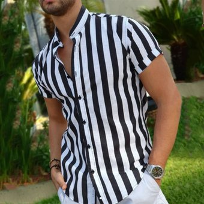

CAMISAS WUSZZIN
Si estás buscando lucir siempre elegante, en nuestras tiendas descubre esa camisa que te permita estar cómodo y a la moda, podrás encontrar camisas negras, blancas, azules y muchos opciones más de tus marcas favoritas Tommy Hilfiger, Americanino y La Martina.
CAMISAS
Las materias primas utilizadas en la elaboración de una camisa son: Telas de algodón, poliester, rayón, seda y de fibras sintéticas. Botones de material acrílico de madera o de metal de dos o cuatro hoyos. Hilos de acrílico, nylon, poliester, derivados del petróleo o naturales.
Tipo de telas
- Algodón.
- Lino.
- Mezcla de lino.
- Seda. Ver más.
- Tejido elástico.
- Hilado doble torzal.
 |
CAMISA MANGA LARGA SIN CUELLO | $50.000 |
 |
CAMISA MANGA LARGA CON CUELLO | $70.000 |
|  | CAMISAS UNICOLOR | $75.000 |
 REGRESAR
REGRESAR